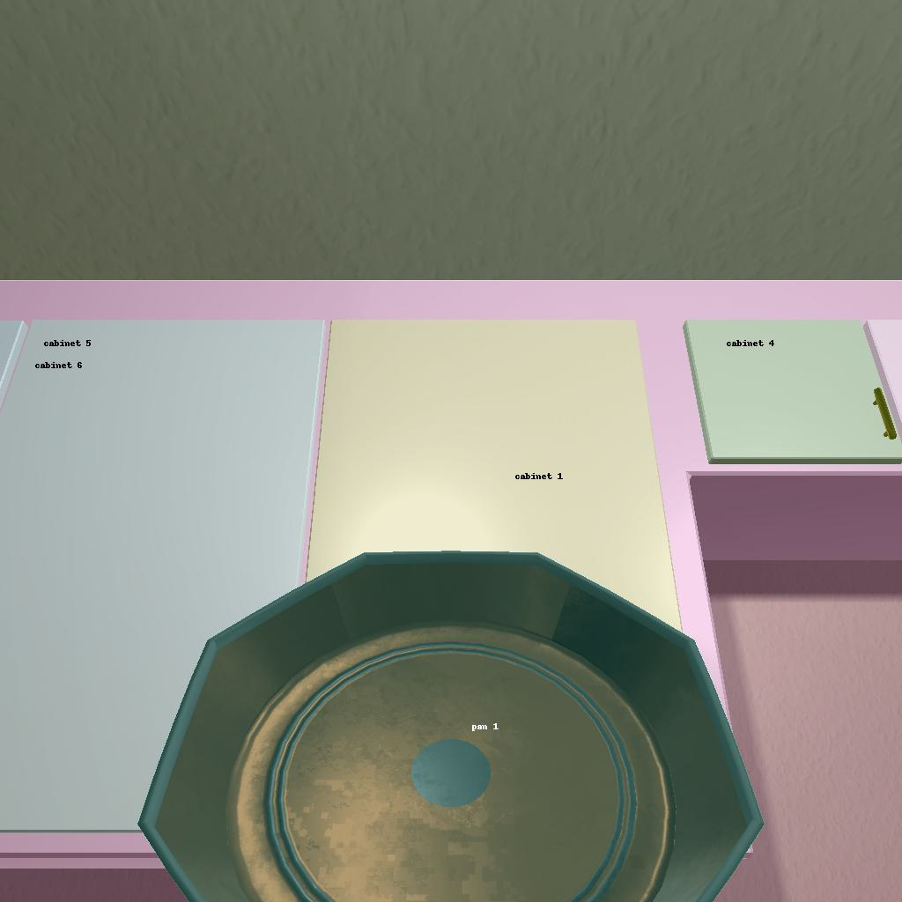

---------------------------------------------------------task: 18---------------------------------------------------------
--------------------------------------------------------------------------------------------------------------------------------------------------------------------
--------------------------------------------------------------------------------------------------------------------------------------------------------------------
Step:--------------------------------------------------------------------------16-------------------------------------------------------------------------------
----------------------------------------
VLM Prompt:
Image1:
**Instruction**
1. Analyze the provided image to identify all visible household objects, focusing on those relevant to the task description "cool some pot and put it in cabinet."
2. Use the analysis of the image and the task hint "The agent must find an object of the desired type, pick it up, go to a fridge, cool the object with the fridge, then find the correct location to place it, and put it down there. The agent does not need to use the fridge button or open the fridge to cool the object, and the agent just needs to do action that is "cool the object with the fridge"." to answer the question: what is the most reasonable action in the choices for the task description "cool some pot and put it in cabinet"?
4. Decide and write the answer using the template: The answer is: (i): , where i is the real number. If there is no desired object in the image, search every place based on **Initial Observation** to find the object. And if no one is exactly correct, choose a similar answer.
**Initial Observation**
You are in the middle of a room. Looking quickly around you, you can see cabinet (1-20), countertop (1-3), coffeemachine (1), toaster (1), sink (1), fridge (1), microwave (1), garbagecan (1), drawer (1-3), sinkbasin (1), stoveburner (1-4), shelf (1-3)
**Answer Choices**
(1): go to cabinet 2
(2): go to cabinet 3
(3): go to cabinet 4
(4): go to cabinet 5
(5): go to cabinet 6
(6): go to countertop 1
(7): go to coffeemachine 1
(8): go to cabinet 7
(9): go to toaster 1
(10): go to cabinet 8
(11): go to sink 1
(12): go to fridge 1
(13): go to microwave 1
(14): go to garbagecan 1
(15): go to cabinet 9
(16): go to cabinet 10
(17): go to countertop 2
(18): go to cabinet 11
(19): go to cabinet 12
(20): go to drawer 1
(21): go to countertop 3
(22): go to drawer 2
(23): go to cabinet 13
(24): go to sinkbasin 1
(25): go to cabinet 14
(26): go to drawer 3
(27): go to stoveburner 1
(28): go to stoveburner 2
(29): go to stoveburner 3
(30): go to cabinet 15
(31): go to stoveburner 4
(32): go to cabinet 16
(33): go to cabinet 17
(34): go to cabinet 18
(35): go to cabinet 19
(36): go to cabinet 20
(37): go to shelf 1
(38): go to shelf 2
(39): go to shelf 3
(40): open cabinet 1
(41): close cabinet 1
(42): examine cabinet 1
**Answer**
Let's think step by step by following the instructions.
----------------------------------------
----------------------------------------
Original Response:
Firstly, we need to identify the relevant household objects in the image. The image clearly shows a pan labeled "pan 1" and cabinets labeled "cabinet 1," "cabinet 4," "cabinet 5," and "cabinet 6."
According to the task description "cool some pot and put it in cabinet," we need to find a pot, cool it, and then put it in a cabinet. However, the image does not show a pot, but it does show a pan, which is similar. Considering the task hint, we do not need to physically use the fridge but perform an action that represents cooling the object with the fridge.
Based on the initial observation, we know there is a fridge in the room. The most logical action is to go to the fridge to "cool" the pan since we're assuming the pan is the object we need to cool, as no pot is visible.
After cooling the object, we need to put it in a cabinet. The image shows multiple cabinets, but the task does not specify which cabinet to use. We would typically look for an empty cabinet or one designated for pots and pans.
Given the answer choices, the most reasonable action is to first go to the fridge to cool the pan and then choose a cabinet to put it in. Since the task does not specify which cabinet to use, we can choose the one closest to the fridge for efficiency, which is not visible in the image. We must search every place to find it.
The answer is: (12): go to fridge 1. After cooling the pan at the fridge, we would then need to search for the closest or appropriate cabinet to complete the task.
----------------------------------------
----------------------------------------
>>> Refine Original VLM Response and Get Pure Action: go to fridge 1
----------------------------------------
-----------------------------------------------------------------
Running time: 18.99682378768921 seconds
Total Money: 6.463900000000003
-----------------------------------------------------------------
-----------------------------------------------------------------
Text Observation:You arrive at loc 12. The fridge 1 is closed.
-----------------------------------------------------------------
UNSUCCEED